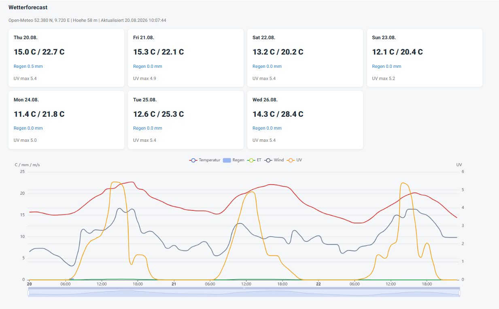
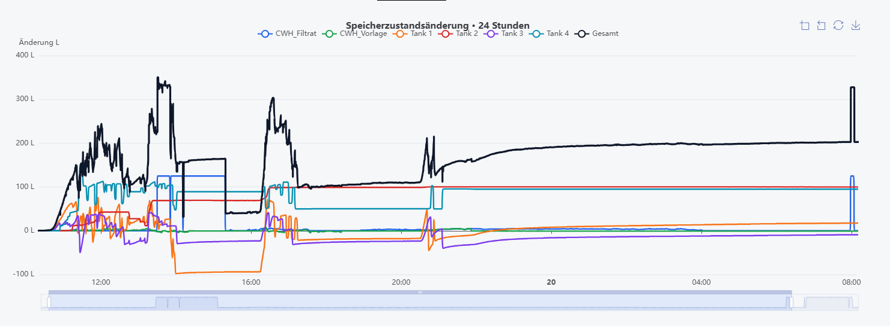
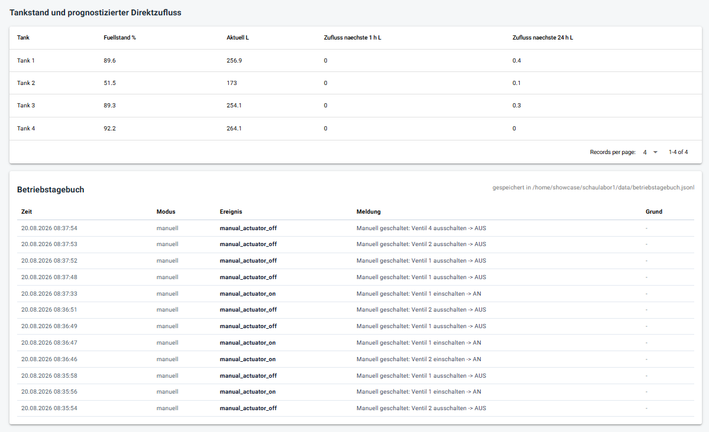

From weather forecast to automatic storage management: development of a sensor-based and forecast-driven control system for the Blue Green Yard.
The rainwater storage system has been extended from manual operation to an automated management system. Weather forecasts, current tank levels and the hydraulic pump network are combined to decide when water needs to be retained, transferred or discharged.
Expected rainfall is continuously considered.
Current water levels provide the available storage capacity.
Expected rainfall is converted into tank-specific inflow.
Pumps and valves execute the required water transfer.

Weather Forecast
Rainfall forecasts provide the basis for predicting
the expected inflow into the storage tanks.

Storage Management
Tank levels, available storage capacity and automatic
transfer decisions are displayed in the dashboard.

Operation Log
Automatic and manual actions are recorded with time,
water volume, pumps, valves and operating mode.
Each tank has its own rainfall inflow factor because the connected roof areas differ. The forecast rainfall is therefore converted into an expected water volume for every tank.
Only if the current tank volume plus the expected rainfall exceeds the available capacity does the system create additional storage space.
Before expected rainfall, the system calculates whether storage capacity is missing and automatically determines the required transfer volume.
The CWH reservoir is automatically refilled when its defined water level is reached.
If a main tank reaches a critical level, water is automatically transferred to another suitable tank.
Measured rain events can be used to gradually improve the tank-specific rainfall inflow factors.
The following events were automatically recorded during operation:
95.2 L requested · Pump 1 · Valve 2
Refill completed automatically at 10:56.
Tank 3 → Tank 4 · 3.5 L · Pump 3
Automatic discharge plan completed successfully.
Tank 1 → Tank 2 · 54.7 L · Pump 1 + Valve 1
Transfer automatically completed at 11:33.
The current system mainly manages water quantity: How much water is stored? How much rain is expected? Where is free storage capacity available?
The next development step is to also include water quality and water age. This creates a digital Rainwater Inventory for every storage tank.
This would allow the system to decide not only where storage space is required, but also which water should be retained, transferred, used or replaced.
When sufficient rainwater is available, the management strategy could therefore shift from purely quantitative storage management to quality-oriented water management.
Quantity
Water age
Water quality
Rain forecast
Keep · transfer · use · replace